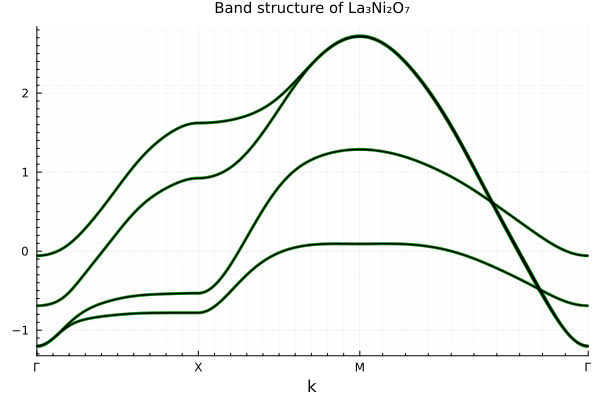
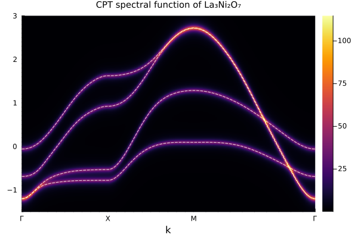

La₃Ni₂O₇: Interface with Wannier90
This example demonstrates a complete workflow of interfacing with Wannier90 to construct a tight-binding model from first-principles data, and then performing cluster perturbation theory (CPT) calculations on top of it.
The Wannier90 data used here is for the bilayer nickelate La₃Ni₂O₇, taken from the supplementary data of Yue et al., "Correlated electronic structures and unconventional superconductivity in bilayer nickelate heterostructures". The full dataset (including POSCAR, wannier90.win, wannier90_hr.dat, wannier90.wout, KPOINTS, and cRPA interaction tensors) is hosted as a Julia artifact for convenience, but the original data and citation should be directed to the Zenodo record.
Band Structure from Wannier90
First, we obtain the Wannier90 data through Julia's artifact system and read the lattice together with the real-space Hamiltonian:
using Artifacts
using Pkg
using ExactDiagonalization
using QuantumLattices
using QuantumClusterTheories
using TightBindingApproximation
using TightBindingApproximation.Wannier90
import Plots
# Locate the Artifacts.toml and download the La₃Ni₂O₇ dataset
toml = Artifacts.find_artifacts_toml(@__DIR__)
dir = Pkg.Artifacts.ensure_artifact_installed("La3Ni2O7Data", toml)
# The Wannier90 output files use the seedname "wannier90"
seedname = "wannier90"The function readlattice parses the wannier90.win input file to extract the crystal lattice and atom positions, while readhamiltonian reads the real-space hopping amplitudes from wannier90_hr.dat, the standard Wannier90 output. Together they allow us to construct a W90 system — a tight-binding model that directly reproduces the Wannier-interpolated band structure:
# Read the lattice from the Wannier90 input file
unitcell = readlattice(dir, seedname)
# The Wannier90 Hamiltonian describes 4 Wannier orbitals (2 Ni × 2 orbitals each) without spin
hilbert = Hilbert(Fock{:f}(2, 1), length(unitcell))
# Construct the W90 tight-binding system
# W90(unitcell, hilbert, H) uses atom positions to approximate Wannier centers
wan = Algorithm(:La₃Ni₂O₇, W90(unitcell, hilbert, readhamiltonian(dir, seedname)))The raw W90 system is spinless because the underlying Wannier90 calculation did not include spin-orbit coupling. To obtain a spinful model, we convert it to a standard tight-binding approximation (TBA) with complement_spin=true, which duplicates each orbital into spin-↑ and spin-↓ sectors:
# Convert W90 to a spinful tight-binding model
tba = Algorithm(wan, hilbert; complement_spin=true, tol=1e-4)
# Define a high-symmetry k-path in the Brillouin zone
path = ReciprocalPath(
reciprocals(unitcell),
(0, 0, 0), (1//2, 0, 0), (1//2, 1//2, 0), (0, 0, 0);
labels=("Γ", "X", "M", "Γ")
)
# Compute and compare band structures
bands_wan = wan(:EB, EnergyBands(path))
bands_tba = tba(:EB, EnergyBands(path))
plt = Plots.plot()
Plots.plot!(plt, bands_wan; color=:green, lw=3)
Plots.plot!(plt, bands_tba; color=:black, lw=1)
Plots.title!(plt, "Band structure of La₃Ni₂O₇")
The green (thick) bands are directly interpolated from the Wannier90 Hamiltonian, while the black (thin) bands come from the spin-complemented TBA model. The exact agreement validates the conversion.
Cluster Perturbation Theory
With the tight-binding model in hand, we can now build a CPT calculation. CPT partitions the lattice into small clusters, solves each cluster exactly (here using exact diagonalization), and treats inter-cluster hopping perturbatively.
Note that the operator-based CPT constructor — used here to interface with Wannier90 — only requires the operators defined on the unitcell (extracted from the TBA model via expand(tba.frontend.system)). CPT automatically expands (embeds) these unitcell operators onto the specified cluster lattice and separates them into intra-cluster and inter-cluster contributions, so there is no need to manually construct the cluster-level Hamiltonian.
We now set up a 2×2 cluster of the La₃Ni₂O₇ unit cell:
# Build a 2×2 cluster lattice (periodic in-plane, open along c)
unitcell_cpt = Lattice(wan.frontend.lattice, (1, 1, 1), ("P", "P", "O"))
lattice = Lattice(wan.frontend.lattice, (2, 2, 1), ("P", "P", "O"))
# Spinful Hilbert space for the cluster
hilbert_cpt = Hilbert(Fock{:f}(2, 2), length(lattice))
# Add a Hubbard interaction (U=0 for illustration; use a finite value for real calculations)
U = Hubbard(:U, 0.0)
# La₃Ni₂O₇ is at 3/8 filling; the 2×2 cluster has 4 unit cells,
# each with 4 Wannier orbitals × 2 spins = 8 states, giving 32 states total.
# The physical filling is 32 × 3/8 = 12 electrons. Here we use only 2 electrons
# for illustration purposes to keep exact diagonalization lightweight.
quantumnumber = ℕ(2) ⊠ 𝕊ᶻ(0)
cpt = Algorithm(
:La₃Ni₂O₇,
CPT(unitcell_cpt, expand(tba.frontend.system), lattice, hilbert_cpt, (U,), quantumnumber)
)Finally, we compute the single-particle spectral function along the high-symmetry path.
# Energy range for the spectral function
emin, emax = -1.5, 3.0
# Compute dynamical spectra with a finite broadening η = 0.05 eV
spectra = cpt(:EB, DynamicalSpectra(path, LinRange(emin, emax, 451)); η=0.05)
# Plot the CPT spectral function with TBA bands overlaid
plt = Plots.plot()
Plots.plot!(plt, spectra)
Plots.plot!(plt, bands_tba; ls=:dash, color=:white, lw=1, alpha=0.5)
Plots.title!(plt, "CPT spectral function of La₃Ni₂O₇")
The dashed white lines show the bare TBA band structure overlaid on the CPT spectral function. Since we used U=0, the CPT spectrum is essentially the non-interacting limit — in a real calculation, a finite Hubbard U would capture correlation effects such as band renormalization and spectral weight transfer. This workflow — from Wannier90 data to CPT spectra — forms the foundation for studying strongly correlated materials with realistic first-principles inputs.